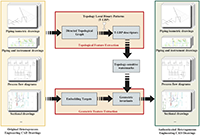
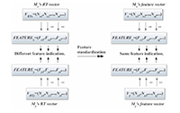
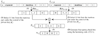
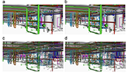

[中文版] [Biography] [Research] [Projects] [Publications] [Professional Activities] [Teaching] [Students] [Curriculum Vitae ]
I am currently an associate professor at School of Automation, Nanjing University of Science and Technology. I obtained my Ph.D. degree in Computer Science from Institute of Computing Technology, Chinese Academy of Sciences in 2009, under the supervision of Prof. Weiqing Tang. I got my BS degree and MS degree in computer science from the School of Computer Science and Engineering, Nanjing University of Science and Technology in 2004 and 2006, respectively, under the supervision of Prof. Huizhong Wu and Prof. Weiqing Li.
[^Top]
Computer Graphics, Augmented Reality, Computer Vision, Machine Learning.
[^Top]
[Projects]
***, National Key Research and Development program of China, Project number: 2018YFB1004900, 2018-2021, Main Investigator
Research on Digital Watermarking for Engineering CAD Drawings with Local Disproportional Transformations Local Disproportional Transformations , National Natural Science Foundation, Project number: 61300160, 2014-2016, Principal Investigator
[^Top]
| |
|
 |
Learning to Hash for Personalized Image Authentication
Zhiyong Su*, Liang Yao, Jialin Mei, Lang Zhou, and Weiqing Li
Under Review, 2019. [PDF] [Code] |
 |
Zhiyong Su*, Ying Ye, Qi Zhang, Weiqing Li, Yuewei Dai
IEEE Transactions on Information Forensics and Security, 13(4): 1018-1030, 2018. [PDF] |
|  |
A Unified Framework for Authenticating Topology Integrity of 2D Heterogeneous Engineering CAD Drawings
Zhiyong Su*, Lang Zhou, Yaobin Mao, Yuewei Dai, Weiqing Tang
Multimedia Tools and Applications, 76(20): 20663-20689, 2017. [PDF] |
|
Topology based 2D engineering drawing and 3D model matching for process plant
Rui Wen*, Weiqing Tang, Zhiyong Su
Graphical Models, 92: 1-15, 2017. |
|  |
Measuring 3D process plant model similarity based on topological relationship distribution
Rui Wen*, Weiqing Tang, Zhiyong Su
Computer-Aided Design and Applications, 14(4): 422-435, 2017. |
 |
Topology Authentication for Piping Isometric Drawings
Zhiyong Su*, Xin Yang, Guangjie Liu, Weiqing Li, Weiqing Tang
Computer-Aided Design, 66(9): 33-44, 2015. [PDF] |
|  |
Authenticating topological integrity of process plant models through digital watermarking
Zhiyong Su, Lang Zhou, Guangjie Liu, Jianshou Kong*, Yuewei Dai
Multimedia Tools and Applications, 73(3): 1687–1707, 2014. [PDF] |
 |
Watermarking 3D CAPD models for topology verification
Zhiyong Su*, Weiqing Li, Jianshou Kong, Yuewei Dai, Weiqing Tang
Computer-Aided Design, 45(7): 1042-1052, 2013. [PDF] |
|  |
Topology authentication for CAPD models based on Laplacian coordinates
Zhiyong Su*, Lang Zhou, Weiqing Li, Yuewei Dai, Weiqing Tang
Computers & Graphics, 37(4): 269–279, 2013. [PDF] |
[^Top]
[Professional Activities]
IEEE Transactions on Information Forensics and Security, IEEE Transactions on Multimedia, Computer-Aided Design, International Journal of Distributed Sensor Networks, International Journal of Automation and Computing
[^Top]
[Teaching]
Graduate-level
Information processing technology of network system
Undergraduate-level
Fundamentals of Computer Software Techniques
Communication Technology of power system
[^Top]
[Students]
PhD students
2014-: Zhuheng Lu (Co-Supervisor)
2011-: Weiwei Mao (Co-Supervisor)
Master students
2018-: An Deng, Yihe Wu, Lijun He, Suqin Jiang, Huifang Li (Co-Supervisor)
2017-: Qi Li, Han Wang, Liang Yao, JiaLin Mei
Alumni
2016-2019: Weihao Li(Master Student), Hantian Yuan(Master Student), Shiming Yao(Master Student), Jingrong Zhang(Master Student)
2015-2018: JiaSheng Xue(Master Student), Qi Zhang(Master Student), Ying Ye(Master Student)
2014-2017: Gong Chen (Master Student), Xiaobin Ma (Master Student), Xin Wang (Master Student), Ying Lu (Master Student)
2013-2016: Yafei Guo (Master Student), Xiaosheng Shen(Master Student)
2012-2015: Yichao Yao (Master Student) (Co-Supervisor), Chenhuan Xing (Master Student) (Co-Supervisor)
2011-2014: Yang Yang (Master Student)
2009-2012: Kai Xu (Master Student), Qi Zhang (Master Student)
[^Top]

Copyright © 2019, Zhiyong Su, Last modified: 20.07.2019